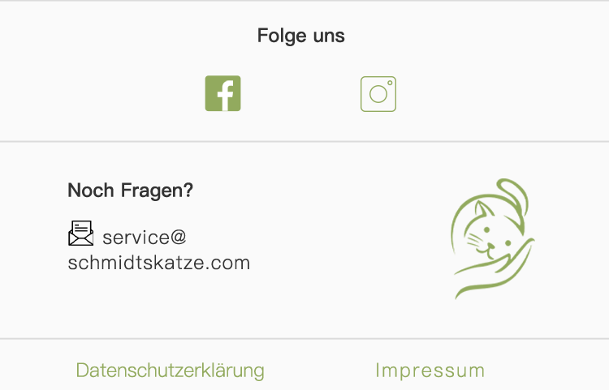

1、Information über die Erhebung
personenbezogener Daten
Im Folgenden informieren wir Sie über die Erhebung personenbezogener Daten bei Nutzung unserer Webseite.
Personenbezogene Daten sind alle Daten, die auf Sie persönlich beziehbar sind, z.B. Name, Adresse, E-Mail-Adressen,
Nutzerverhalten.
Verantwortlicher gem. Art. 4 Abs. 7 EU-Datenschutz-Grundverordnung (DS-GVO) ist die Finesteed Handels GmbH, Auf der
Reihe 2, 45884 Gelsenkirchen, E-Mail: info@schmidtskatze.com Unseren Datenschutzbeauftragten erreichen Sie
unter datenschutz@schmidtskatze.com oder unserer Postadresse mit dem Zusatz „Datenschutzbeauftragter“.
Falls wir für einzelne Funktionen unseres Angebots auf beauftragte Dienstleister zurückgreifen oder Ihre Daten für werbliche
Zwecke nutzen möchten, werden wir Sie untenstehend im Detail über die jeweiligen Vorgänge informieren.
2、 Ihre Rechte
Sie haben uns gegenüber folgende Rechte hinsichtlich der Sie betreffenden personenbezogenen Daten:
1.Recht auf Auskunft (Art. 15 DS-GVO),
2.Recht auf Berichtigung oder Löschung (Art. 16, 17 DS-GVO),
3.Recht auf Einschränkung der Verarbeitung (Art. 18 DS-GVO),
4.Recht auf Widerspruch gegen die Verarbeitung (Art. 21 DS-GVO),
5.Recht auf Datenübertragbarkeit (Art. 20 DS-GVO),
6.Recht auf Widerruf der Einwilligung (Art. 7 Abs. 3 DS-GVO).
Sie haben zudem das Recht, sich bei einer Datenschutz-Aufsichtsbehörde über die Verarbeitung Ihrer personenbezogenen
Daten durch uns zu beschweren (Art. 77 DS-GVO).
3、 Widerspruch oder Widerruf
gegen die Verarbeitung Ihrer Daten
Falls Sie eine Einwilligung zur Verarbeitung Ihrer Daten erteilt haben, können Sie diese jederzeit widerrufen. Ein solcher Widerruf
beeinflusst die Zulässigkeit der Verarbeitung Ihrer personenbezogenen Daten, nachdem Sie ihn uns gegenüber ausgesprochen
haben.
Soweit wir die Verarbeitung Ihrer personenbezogenen Daten auf die Interessenabwägung stützen, können Sie Widerspruch
gegen die Verarbeitung einlegen. Dies ist der Fall, wenn die Verarbeitung insbesondere nicht zur Erfüllung eines Vertrags mit
Ihnen erforderlich ist, was von uns jeweils bei der nachfolgenden Beschreibung der Funktionen dargestellt wird. Bei Ausübung
eines solchen Widerspruchs bitten wir um Darlegung der Gründe, weshalb wir Ihre personenbezogenen Daten nicht wie von uns
durchgeführt verarbeiten sollten. Im Falle Ihres begründeten Widerspruchs prüfen wir die Sachlage und werden entweder die
Datenverarbeitung einstellen bzw. anpassen oder Ihnen unsere zwingenden schutzwürdigen Gründe aufzeigen, aufgrund derer
wir die Verarbeitung fortführen.
Selbstverständlich können Sie der Verarbeitung Ihrer personenbezogenen Daten für Zwecke der Werbung und
Datenanalyse jederzeit widersprechen. Über Ihren Werbewiderspruch können Sie uns unter folgenden Kontaktdaten
informieren: Finesteed Handels GmbH, Auf der Reihe 2, 45884 Gelsenkirchen, E-Mail: info@schmidtskatze.com.
4、 Erhebung personenbezogener
Daten bei Besuch unserer Webseite
Bei der bloß informatorischen Nutzung der Webseite, also wenn Sie sich nicht registrieren oder uns anderweitig Informationen
übermitteln, erheben wir nur die personenbezogenen Daten, die Ihr Browser an unseren Server übermittelt. Wenn Sie unsere
Webseite betrachten möchten, erheben wir die folgenden Daten, die für uns technisch erforderlich sind, um Ihnen unsere Webseite
anzuzeigen und die Stabilität und Sicherheit zu gewährleisten (Rechtsgrundlage ist Art. 6 Abs. 1 S. 1 lit. f DS-GVO):
IP-Adresse
Datum und Uhrzeit der Anfrage
Zeitzonendifferenz zur Greenwich Mean Time (GMT)
Inhalt der Anforderung (konkrete Seite)
Zugriffsstatus/HTTP-Statuscode
jeweils übertragene DatenmengeWebseite, von der die Anforderung kommt
Browser
Betriebssystem und dessen Oberfläche
Sprache und Version der
Browsersoftware.
Zusätzlich zu den zuvor genannten Daten werden bei Ihrer Nutzung unserer Webseite Cookies auf Ihrem Computer gespeichert.
Bei Cookies handelt es sich um kleine Textdateien, die auf Ihrer Festplatte dem von Ihnen verwendeten Browser zugeordnet
gespeichert werden und durch welche der Stelle, die den Cookie setzt (hier durch uns), bestimmte Informationen zufließen.
Cookies können keine Programme ausführen oder Viren auf Ihren Computer übertragen. Sie dienen dazu, das Internetangebot
insgesamt nutzerfreundlicher und effektiver zu machen.
Einsatz von Cookies:
Diese Webseite nutzt transiente und persistente Cookies, deren Umfang und Funktionsweise im Folgenden erläutert
werden:
Transiente Cookies werden automatisiert gelöscht, wenn Sie den Browser schließen. Dazu zählen insbesondere die
Session-Cookies. Diese speichern eine sogenannte Session-ID, mit welcher sich verschiedene Anfragen Ihres Browsers der
gemeinsamen Sitzung zuordnen lassen. Dadurch kann Ihr Computer wiedererkannt werden, wenn Sie auf unsere Webseite
zurückkehren. Die Session-Cookies werden gelöscht, wenn Sie sich ausloggen oder den Browser schließen.
Persistente Cookies werden automatisiert nach einer vorgegebenen Dauer gelöscht, die sich je nach Cookie unterscheiden
kann. Sie können die Cookies in den Sicherheitseinstellungen Ihres Browsers jederzeit löschen.
Sie können Ihre Browser-Einstellung entsprechend Ihren Wünschen konfigurieren und z.B. die Annahme von
Third-Party-Cookies oder allen Cookies ablehnen. Wir weisen Sie darauf hin, dass Sie eventuell nicht alle Funktionen dieser
Webseite nutzen können.
5、 Weitere Funktionen und
Angebote unserer Webseite
Neben der rein informatorischen Nutzung unserer Webseite bieten wir verschiedene Leistungen an, die Sie bei Interesse nutzen
können. Dazu müssen Sie in der Regel weitere personenbezogene Daten angeben, die wir zur Erbringung der jeweiligen Leistung
nutzen und für die die zuvor genannten Grundsätze zur Datenverarbeitung gelten.
Teilweise bedienen wir uns zur Verarbeitung Ihrer Daten externer Dienstleister. Diese wurden von uns sorgfältig ausgewählt und
beauftragt, sind an unsere Weisungen gebunden und werden regelmäßig kontrolliert.
Soweit unsere Dienstleister oder Partner ihren Sitz in einem Staat außerhalb des Europäischen Wirtschaftsraumen (EWR) haben,
informieren wir Sie über die Folgen dieses Umstands in der Beschreibung des Angebotes.
6、 Kontaktaufnahme per
Kontaktformular oder E-Mail
Bei Fragen jeglicher Art bieten wir Ihnen die Möglichkeit, mit uns z.B. über ein auf der Webseite bereitgestelltes Formular oder
über die angegebenen E-Mail-Adressen Kontakt aufzunehmen. Dabei ist die Angabe einer gültigen E-Mail-Adresse erforderlich,
damit wir wissen, von wem die Anfrage stammt und um diese beantworten zu können. Weitere Angaben können freiwillig getätigt
werden.
Die Datenverarbeitung zum Zwecke der Kontaktaufnahme mit uns erfolgt nach Art. 6 Abs. 1 S. 1 lit. a DSGVO auf Grundlage Ihrer
freiwillig erteilten Einwilligung.
Bei Ihrer Kontaktaufnahme mit uns per E-Mail oder über ein Kontaktformular werden die von Ihnen mitgeteilten Daten (Ihre
E-Mail-Adresse, Ihre Nachricht und ggf. weitere Informationen) von uns gespeichert, um Ihre Anfrage zu beantworten. Die in
diesem Zusammenhang anfallenden Daten löschen wir, nachdem die Speicherung nicht mehr erforderlich ist, oder schränken die
Verarbeitung ein, falls gesetzliche Aufbewahrungspflichten bestehen.
7、 Datensicherheit
Wir bedienen uns geeigneter technischer und organisatorischer Sicherheitsmaßnahmen, um Ihre Daten gegen zufällige oder
vorsätzliche Manipulationen, teilweisen oder vollständigen Verlust, Zerstörung oder gegen den unbefugten Zugriff Dritter zu schützen.
Unsere Sicherheitsmaßnahmen werden entsprechend der technologischen Entwicklung fortlaufend verbessert.
8、 Aktualität und Änderung dieser
Datenschutzerklärung
Diese Datenschutzerklärung ist aktuell gültig und hat den Stand Jan 2021. Durch die Weiterentwicklung unserer Webseite und
Angebote darüber oder aufgrund geänderter gesetzlicher beziehungsweise behördlicher Vorgaben kann es notwendig werden, diese
Datenschutzerklärung zu ändern. Die jeweils aktuelle Datenschutzerklärung kann jederzeit auf der Webseite
unter www.schmidtskatze.com/datenschutz von Ihnen abgerufen und ausgedruckt werden.
